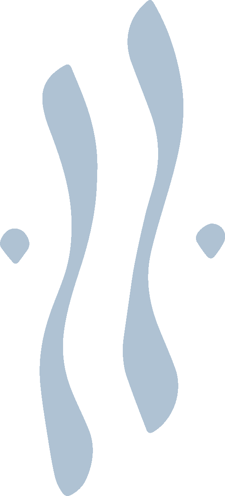

One house. Two disciplines.
The warmth of a working bakery meets the clarity of a coffee lab — two crafts, composed as one experience.


The Coffee Lab
Origins are selected for character, then brewed to reveal what makes each coffee distinct.
Explore the coffee ↗Bring them together.
A room where the first cup, a warm bake and the rest of the day find their natural place.
Read Our Story ↗Made to be remembered.
Distinctive pairings from the pastry bench and coffee bar, created with restraint and served at their best.

Butter croissant
Deeply layered, delicately crisp and baked through the day.

House flat white
Textured milk and a balanced espresso, composed for every day.

Seasonal tart
Fruit-led, quietly indulgent and finished with a light hand.

Seasonal filter
A changing origin brewed to express clarity and character.

Pain au chocolat
Dark chocolate folded into a shattering, buttery pastry.

Cold brew
Slow-steeped for a clean, rounded and refreshing finish.

Pistachio cruffin
Flaky pastry filled with a softly roasted pistachio cream.

Dark chocolate slice
A restrained, deeply cocoa-led finish for the table.

Roastique cappuccino
Silken microfoam over an expressive double espresso.
Gather around the table.
Roastique gatherings are shaped around coffee, pastry and the pleasure of learning something together.

Coffee tastings
12 December 2026
Guided tastings that make origin, process and flavour easier to understand.
Bakery sessions
17 January 2027
Small-format sessions rooted in technique, patience and the pleasure of making.
Private gatherings
6 February 2027
A considered setting for celebrations, conversations and shared tables.
Guest notes
Approved guest stories will live here — shared with care, and always in the guest’s own words.
From our table.
A closer look at the coffees, bakes and everyday rituals that shape Roastique.
Follow @roastique ↗